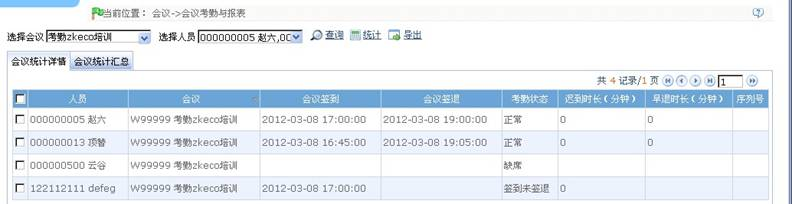
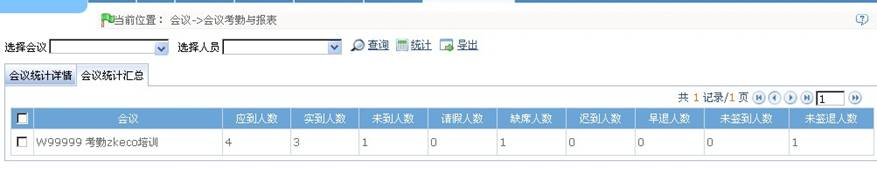

考勤报表是将所查询人员在指定时期内的每次会议状况在表中列出，并统计旷工、迟到/早退、请假的时间，便于对应核查是否与实际情况有出入。如果查看结果不符，可以根据需要添加补签卡、请假单，以及直接修改日报数据。
（1）点击【会议】-【会议计算与报表】，选择会议，选择人员，点击【统计】，则显示各种会议报表。如下图所示：
a. 会议统计详情
该表显示在选定期间内，会议人员每次会议签到，签退状态、会议考勤统计、迟到早退时长的情况

b. 会议统计详情
该表显示所有会议情况、每次会议的应到人数，实到人数，未到人数，请假人数，缺勤人数，迟到人数，早退人数，未签到人数，未签退人数等所有的信息的总结。
